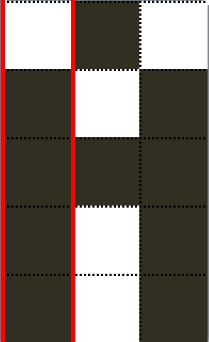
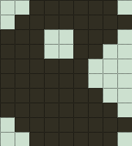
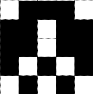
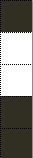
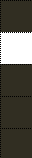
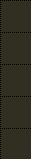
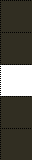

Aujourd'hui, on va apprendre un aspect du dessin en Ti-basic assez difficile à comprendre au premier abord, mais qui se révèle d'une simplicité et d'une utilité non négligeables : les text-sprites.
Mais c'est quoi, un text-sprite ? Une boisson gazeuse sous forme de texte ?
Ben euh... Pas tout à fait. En fait, le mot sprite est utilisé pour désigner une image qui peut être déplacée par rapport au fond de l'écran (source wikipédia).
On va prendre un exemple pratique : vous voulez dessiner un petit personnage à déplacer dans un jeu. Mais comment allez-vous faire ? Utiliser une image ? Non, on ne peut pas la déplacer (et puis une image pour 5*5 pixels... :-° 757o de gâchés). Utiliser des pt-on ? 25 lignes de code pour un petit truc de 5*5 pixels, ça fait encore plein d'octets gâchés (et je parle pas de la lenteur...). Eh bien oui, comment allez-vous faire ? Vous vous en doutiez, on va utiliser les text-sprites.
On peut faire ça en Ti-basic ? Bien entendu, et en utilisant du texte...
o_O ...
Cela semble assez bizarre en effet, mais on est là pour apprendre, non ? Alors amis zéros, à vos caltos !
Bon, maintenant que vous savez ce qu'est un text-sprite, vous allez apprendre qu'il en existe de deux types : horizontaux et verticaux. Mais pour l'instant, on va seulement s'intéresser au text-sprites horizontaux. Ils ne sont pas plus faciles, mais il faut bien commencer quelque part ;) .
Tout d'abord, il va vous falloir une calculatrice... Mais ça, vous le saviez déjà.
Ensuite, créez un programme appelé "SPRITE". Vous y placerez ce code :
Si vous vous y connaissez déjà un peu en Ti-basic, vous savez que length( renvoie la longueur de la chaîne Str1 et que sub( crée une sous-chaîne à partir du caractère I de la chaîne Str1, et dont la taille est de un caractère.
Bon, alors, que fait ce programme ? Il place une suite de 5 espaces dans la chaîne Str1, puis efface le dessin. Ensuite il affiche les caractères de la chaîne les uns après les autres, à un pixel d'écart.
J'ai testé, mais il fait rien, ton programme !
C'est normal : il affiche des espaces sur un fond blanc. Remplacez les espaces par d'autres caractères, par exemple des [ . Vous verrez 4 rangées de 5 pixels noirs, et un de ces crochets, le tout accolé. Rajoutez un espace à la fin de Str1 dans le programme: vous verrez un carré de 5*5 pixels noirs en haut à gauche de l'écran.
Comme vous avez pu le deviner, chaque caractère fait 5 pixels de haut. En fait, ce qui nous intéresse est la rangée de pixels la plus à gauche du caractère: pour le crochet de tout à l'heure, ces 5 pixels sont noirs, mais pour une parenthèse ( par exemple, ce seront les 3 pixels du milieu qui seront noirs. Vous trouverez un tableau de correspondance en annexe. On peut donc afficher quasiment ce que l'on veut qui fasse 5 pixels de haut par X pixels de large.
Je sais pas si je suis très clair, prenons exemple sur A :

On voit bien que les 4 pixels les plus en bas sont noirs, et que le plus haut est blanc.
Bon, on va faire un exemple : vous voulez dessiner un... donut. Rentrez donc "([X[(aa" dans la chaîne Str1. Lancez le programme et oh! un donut apparaît en haut à gauche de l'écran ! Comment est-ce possible ? Mettez un Pause dans votre programme, juste avant le End. Vous verrez les caractères s'afficher les uns après les autres.
Vous pouvez donc vous amuser à composer toutes sortes de petits sprites. Pensez à mettre à la fin de chaque chaîne un nombre suffisant d'espaces pour effacer les pixels en trop.
Vous voulez un Pacman? "([[X] " Après pour d'éventuels jeux, il ne vous reste plus qu'à faire déplacer vos sprites...
Dans la deuxième partie de ce tuto, nous allons voir comment faire des text-sprites verticaux.
Dans la précédente partie, vous avez vu les text-sprites horizontaux... Attaquons nous aux verticaux ! :pirate:
Mais à quoi ça sert, si on a déjà les horizontaux ?
Comme je vous l'ai dit, les text-sprites horizontaux ne peuvent faire des dessins que de X*5 pixels. Et si on veut en faire des plus hauts ? Et bien les text-sprites verticaux sont là pour ça !
Tout d'abord, il faut que vous sachiez que les text-sprites verticaux se font de bas en haut. Pourquoi ? C'est bien plus pratique, comme vous pourrez le voir.
Mais puisque vous connaissez déjà le principe, let's go! On va faire un petit Pacman de 9*10 pixels...
De plus près :

Comment va-t-on faire ? Regardez la dernière ligne : 2 blancs, 6 noirs, 1 blanc. Vous avez déjà deviné que les blancs seront chacun des espaces. Mais les autres ?
Les L que j'utilise sont en fait le L des listes.
Donc, pour faire la dernière ligne, on écrira : " LL ".
Mais comment va-t-on l'écrire ? Un For( comme tout à l'heure ? Malheureusement non. On devra tout écrire à la suite... Mais c'est toujours moins lourd qu'une image.
Faites donc un autre programme, appelez-le comme vous voulez, et placez-y le code suivant...
Mais attendez, vous croyez que je vais vous donner le code, comme ça ? o_O Essayez de trouver tous seuls. Ce que je peux vous dire :
Il faut mettre ClrDraw au début (EffDessin)
C'est sous la forme : :Text(10,1," LL " :Text(9,1,...
Bon, alors,maintenant que nous avons appris comment faire des text-sprites, vous allez les déplacer ! Bon, on va faire un text-sprite horizontal, parce que les text-sprites verticaux sont trop longs à afficher.
Bon, voilà ce à quoi votre Space Invader va ressembler :

A vous de trouver comment l'afficher, le déplacer... il faut juste que vous sachiez deux-trois trucs avant de commencer :
Vous mettrez les coordonnées du sprite dans une variable ;
L’abscisse sera augmentée de 5 à chaque fois ;
L’ordonnée augmentera de 5 à chaque fin de ligne et l’abscisse sera remise à 0 ;
Vous utiliserez une boucle pour assurer le mouvement.
Voilà, c'est tout ce dont vous avez besoin pour commencer !
La correction
:"(!²!( "→Str1
:DelVar A
:DelVar B
:ClrDraw
:While 1
:For(I,1,length(Str1)-1
:sub(Str1,I,1
:Text(B,I+A,Ans
:End
:For(I,0,75
:End
:Text(B,A," "
:A+5→A
:If A=85
:Then
:DelVar A
:B+5→B
:End
:End
Quelques explications :
Le While 1 sert à créer une boucle infinie, comme ça notre vaisseau se déplace bien ;
Les DelVar se trouvent dans le menu prgm et s'appellent en français EffVar ;
Le For(I,0,75 sert à ralentir un peu le déplacement, histoire que ça ne soit pas trop rapide.
Bon, voilà, maintenant vous pouvez déplacer vos sprites !
Vous aimeriez bien avoir les tableaux des différents caractères et leur portion de text-sprite correspondant ? Les voici...
Text-sprites horizontaux
Caractère
Pixels
Caractère
Pixels
Caractère
Pixels
Caractère
Pixels
Caractère
Pixels
Caractère
Pixels
Caractère
Pixels
espace
.
Pt-On 3
J
+
e
Pt-On 2
^
1
:
°
s
(
A
?
]
²
2

i

Y
!
Q
[

'
X

x
û
Î
í
Comme vous pouvez le voir, il manque une possibilité : il n'y a tout simplement pas de caractère correspondant. Les caractères avec accent se trouvent dans le menu Caractères du catalogue, en appuyant sur la touche correspondant à l'accent (de F1 à F4) puis en écrivant la lettre. Appuyez deux fois sur Alpha pour des caractères en minuscules. Malheureusement, ils ne sont pas disponibles pour les Ti-82. Toutefois, on peut les avoir en plaçant des fonctions dans la chaîne (qui commencent par la lettre correspondante). Le caractère x ne s'obtient qu'avec la fonction x √ . Les caractères Pt-On sont ceux que vous pouvez obtenir avec cette fonction : vous les trouverez dans le catalogue. Le caractère
et le caractère
sont disponible via le menu var: allez dans 5:Statistiques puis dans Test
Text-sprites verticaux
Caractère
Pixels
Caractère
Pixels
Caractère
Pixels
Caractère
Pixels
Caractère
Pixels
espace
0
:
00
.
10
'
000
(
010
)
100
N
101
[
110
L (listes)
111
-
0000
4
0010
0
0100
{
0110
F
1000
A
1010
}
1100
1
1110
°
00000
W
010100
*
001000
≠
010000
Pour les text-sprites verticaux, c'est la même chose qu'avec les horizontaux : il manque des possibilités, mais c'est moins grave car on peut utiliser d'autres combinaisons.
Vous ne voulez pas apprendre ces tableaux par cœur ? Eh bien mdr1 et moi vous avons concocté un programme qui retient le tableau des text-sprites horizontaux, et qui vous génère une chaîne de caractères correspondant à un dessin fait avec le Stylo !
Il faut juste que votre dessin soit créé tout en haut à gauche de l'écran.
:ClrHome
:" →Str1
:" .˖J+íe□^1: °s(A?]²2x√/x/û/i/YÎχ²X'!Q[→Str2
:Input "PIXELS: ",C
:For(Θ,0,C-1
: DelVar B
: For(A,0,4
: B+2^(4-A)Pxl-Test(A,Θ→B
: End
: Str1+sub(Str2,B+1,1→Str1
:End
:sub(Str1,2,length(Str1)-1→Str1
:Disp Ans
Sachez aussi que le /i/ représente l'imaginaire (2nd + .) et le /x/ le caractère
Voila. Sur certaines calculatrices (ti-82,...) les I accentués ne fonctionneront peut-être pas. Il faudra alors les remplacer par des espaces, mais on perd des possibilités, ou les afficher dans la calculatrice grâce à la méthode de mdr1 donnée en commentaire.
Voilà, maintenant vous savez tout sur les text-sprites et leur utilité incontestable, dès lors que l'on souhaite faire des programmes utilisant l'écran graphique de manière un peu avancée, et que les objets et mouvements conviennent.